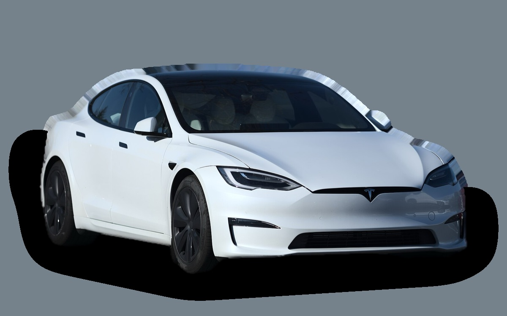
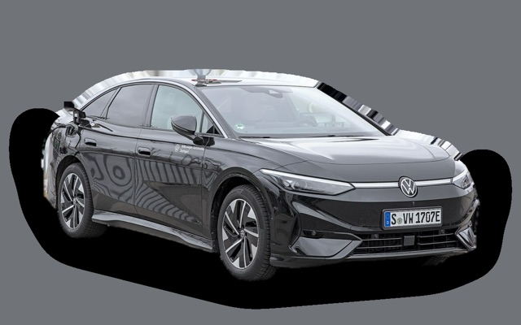
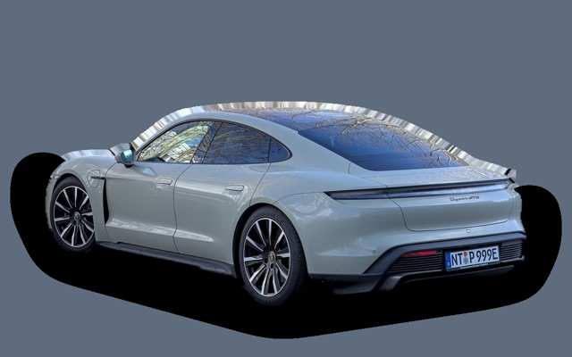
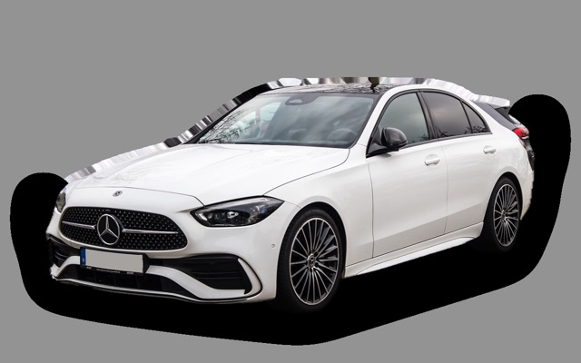
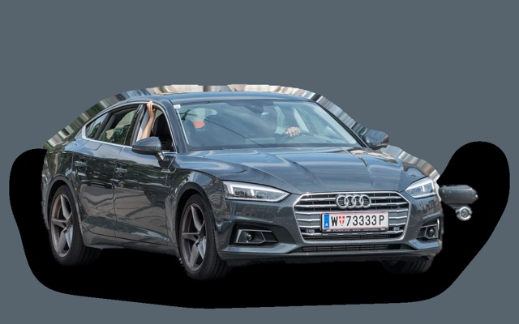
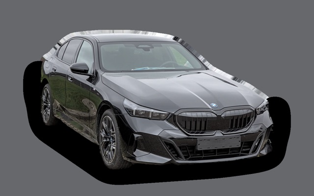
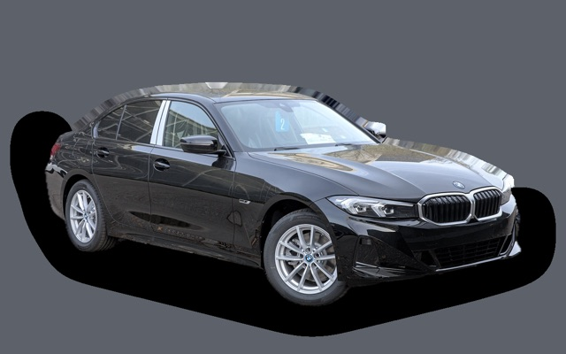

Vad kostar en Tesla Model S per månad?
En Tesla Model S från 2023 kostar cirka 6 768 kr i månaden, allt inräknat.
6 768 krper månad, årsmodell 2023
687 000 krpris, årsmodell 2023
1 379 900 krnypris från
Cprisvärdhetsbetyg (2023)


Månadskostnad per årsmodell
| Årsmodell | Version i beräkningen | Pris | Per månad | Betyg |
|---|---|---|---|---|
| 2026 | Dual Motor AWD, Standard | 1 379 900 kr | 14 608 kr | E |
| 2023 | Dual Motor AWD, Standard | 687 000 kr | 6 768 kr | C |
Räknat på 5 års ägande och 1 250 mil per år, med bränslepriser från 2026-10-22. Månadskostnaden innehåller värdeminskning, drivmedel, service och reparationer, försäkring och fordonsskatt.
Så fördelas kostnaden för en 2023:a
- Värdeminskning: 4 835 kr/mån
- Drivmedel: 471 kr/mån
- Service och reparationer: 477 kr/mån
- Försäkring: 955 kr/mån
- Fordonsskatt: 30 kr/mån
Begagnatpriser i annonser
| Årsmodell | Medianpris | Annonser | Typiskt miltal |
|---|---|---|---|
| 2023 | 674 400 kr | 10 | 7 100 mil |
| 2022 | 829 000 kr | 3 | 8 400 mil |
Medianpriset i svenska annonser per årsmodell i oktober 2026 (källa: Blocket, AutoUncle). Annonspriser är utgångspriser, och slutpriset kan bli lägre.
Motorer och versioner
| Motor | Drivmedel | Effekt | 0–100 km/h | Förbrukning (WLTP) | Räckvidd | Årsmodeller | Pristillägg |
|---|---|---|---|---|---|---|---|
| Dual Motor AWD | El | 670 hk | 3,2 s | 18,2 kWh/100 km | 634 km | från 2021 | – |
| Plaid | El | 1020 hk | 2,1 s | 19,5 kWh/100 km | 600 km | från 2021 | +90 000 kr |
- Utrustning: Standard
Fakta
- Kaross
- Sedan
- Årsmodeller
- sedan 2021
- Nypris från
- 1 379 900 kr
- Bagage
- 793 liter
- Euro NCAP
- 5 av 5 stjärnor
- Nybilsgaranti
- 4 år
- Driftsäkerhet
- 2,5 av 5
- Helförsäkring, uppskattning
- 16 000 kr/år
- Service, uppskattning
- 3 500 kr/år
Vanliga fel att ha koll på
- Främre övre länkarmar, reparation cirka 5 000 kr
- Bromsok kärvar av vägsalt, reparation cirka 5 000 kr
Felen gäller vissa motorer och årsmodeller. I kalkylatorn räknas risken för just den version du väljer.
Fördelar och nackdelar
Fördel
Lång räckvidd, mycket snabb och stort bagage.
Nackdel
Mycket dyr och snabb värdeminskning.
Liknande bilar

Volkswagen ID.76 855 kr/mån som 2026:a
Porsche Taycan6 452 kr/mån som 2023:a
Mercedes-Benz C-klass5 460 kr/mån som 2023:a
Audi A5 Sportback5 243 kr/mån som 2021:a
BMW 5-serie / i58 394 kr/mån som 2026:a
BMW 3-serie4 611 kr/mån som 2023:a
Uppdaterad 2026-10-29 · annonsdata okt 2026